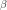
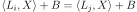
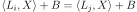

Machine Learning¶
Matrices¶
- mlstatpy.ml.matrices.gram_schmidt(mat, change=False)[source][source]¶
Applies the Gram-Schmidt process. Due to performance, every row is considered as a vector.
@param mat matrix @param change returns the matrix to change the basis @return new matrix or (new matrix, change matrix)
The function assumes the matrix mat is horizontal: it has more columns than rows.
Note
The implementation could be improved by directly using BLAS function.
<<<
import numpy from mlstatpy.ml.matrices import gram_schmidt X = numpy.array([[1.0, 2.0, 3.0, 4.0], [5.0, 6.0, 6.0, 6.0], [5.0, 6.0, 7.0, 8.0]]) T, P = gram_schmidt(X, change=True) print(T) print(P)
>>>
[[ 0.183 0.365 0.548 0.73 ] [ 0.736 0.502 0.024 -0.453] [ 0.651 -0.67 -0.181 0.308]] [[ 0.183 0. 0. ] [-0.477 0.243 0. ] [-1.814 -1.81 2.303]]
- mlstatpy.ml.matrices.linear_regression(X, y, algo=None)[source][source]¶
Solves the linear regression problem, find  which minimizes
 , based on the algorithm
Arbre de décision optimisé pour les régressions linéaires.
, based on the algorithm
Arbre de décision optimisé pour les régressions linéaires.- Paramètres:
X – features
y – targets
algo – None to use the standard algorithm
 , “gram”, “qr”
, “gram”, “qr”
- Renvoie:
beta
<<<
import numpy from mlstatpy.ml.matrices import linear_regression X = numpy.array([[1.0, 2.0, 3.0, 4.0], [5.0, 6.0, 6.0, 6.0], [5.0, 6.0, 7.0, 8.0]]).T y = numpy.array([0.1, 0.2, 0.19, 0.29]) beta = linear_regression(X, y, algo="gram") print(beta)
>>>
[ 0.077 0.037 -0.032]
algo=Nonecomputes.
algo='qr'uses a QR decomposition and calls function dtrtri to invert an upper triangular matrix.algo='gram'usesgram_schmidtand then computes the solution of the linear regression (see above for a link to the algorithm).
- mlstatpy.ml.matrices.streaming_gram_schmidt_update(Xk, Pk)[source][source]¶
Updates matrix to produce
 which is the matrix P in algorithm
Streaming Linear Regression.
The function modifies the matrix Pk
given as an input.
which is the matrix P in algorithm
Streaming Linear Regression.
The function modifies the matrix Pk
given as an input.@param Xk kth row @param Pk matrix P at iteration k-1
- mlstatpy.ml.matrices.streaming_gram_schmidt(mat, start=None)[source][source]¶
Solves the linear regression problem, find which minimizes
, based on
algorithm Streaming Gram-Schmidt.@param mat matrix @param start first row to start iteration,
X.shape[1]by default @return iterator onThe function assumes the matrix mat is horizontal: it has more columns than rows.
<<<
import numpy from mlstatpy.ml.matrices import streaming_gram_schmidt X = numpy.array( [[1, 0.5, 10.0, 5.0, -2.0], [0, 0.4, 20, 4.0, 2.0], [0, 0.7, 20, 4.0, 2.0]], dtype=float, ).T for i, p in enumerate(streaming_gram_schmidt(X.T)): print("iteration", i, "\n", p) t = X[: i + 3] @ p.T print(t.T @ t)
>>>
iteration 0 [[ 0.099 0. 0. ] [-0.953 0.482 0. ] [-0.287 -3.338 3.481]] [[ 1.000e+00 -1.310e-15 -2.238e-15] [-1.310e-15 1.000e+00 1.390e-14] [-2.238e-15 1.390e-14 1.000e+00]] iteration 1 [[ 0.089 0. 0. ] [-0.308 0.177 0. ] [-0.03 -3.334 3.348]] [[ 1.000e+00 -3.570e-16 -1.808e-15] [-3.570e-16 1.000e+00 2.423e-15] [-1.808e-15 2.423e-15 1.000e+00]] iteration 2 [[ 0.088 0. 0. ] [-0.212 0.128 0. ] [-0.016 -3.335 3.342]] [[ 1.000e+00 1.756e-17 -4.660e-15] [ 1.756e-17 1.000e+00 9.833e-16] [-4.660e-15 9.833e-16 1.000e+00]]
- mlstatpy.ml.matrices.streaming_linear_regression_update(Xk, yk, XkXk, bk)[source][source]¶
Updates coefficients to produce in Streaming Linear Regression. The function modifies the matrix Pk given as an input.
- Paramètres:
Xk – kth row
yk – kth target
XkXk – matrix , updated by the function
bk – current coefficient (updated by the function)
- mlstatpy.ml.matrices.streaming_linear_regression(mat, y, start=None)[source][source]¶
Streaming algorithm to solve a linear regression. See Streaming Linear Regression.
@param mat features @param y expected target @return iterator on coefficients
<<<
import numpy from mlstatpy.ml.matrices import streaming_linear_regression, linear_regression X = numpy.array( [[1, 0.5, 10.0, 5.0, -2.0], [0, 0.4, 20, 4.0, 2.0], [0, 0.7, 20, 4.0, 3.0]], dtype=float, ).T y = numpy.array([1.0, 0.3, 10, 5.1, -3.0]) for i, bk in enumerate(streaming_linear_regression(X, y)): bk0 = linear_regression(X[: i + 3], y[: i + 3]) print("iteration", i, bk, bk0)
>>>
iteration 0 [ 1. 0.667 -0.667] [ 1. 0.667 -0.667] iteration 1 [ 1.03 0.682 -0.697] [ 1.03 0.682 -0.697] iteration 2 [ 1.036 0.857 -0.875] [ 1.036 0.857 -0.875]
- mlstatpy.ml.matrices.streaming_linear_regression_gram_schmidt_update(Xk, yk, Xkyk, Pk, bk)[source][source]¶
Updates coefficients to produce in Streaming Linear Regression. The function modifies the matrix Pk given as an input.
- Paramètres:
Xk – kth row
yk – kth target
Xkyk – matrix
 (updated by the function)
(updated by the function)Pk – Gram-Schmidt matrix produced by the streaming algorithm (updated by the function)
- Renvoie:
bk current coefficient (updated by the function)
- mlstatpy.ml.matrices.streaming_linear_regression_gram_schmidt(mat, y, start=None)[source][source]¶
Streaming algorithm to solve a linear regression with Gram-Schmidt algorithm. See Streaming Linear Regression version Gram-Schmidt.
@param mat features @param y expected target @return iterator on coefficients
<<<
import numpy from mlstatpy.ml.matrices import streaming_linear_regression, linear_regression X = numpy.array( [[1, 0.5, 10.0, 5.0, -2.0], [0, 0.4, 20, 4.0, 2.0], [0, 0.7, 20, 4.0, 3.0]], dtype=float, ).T y = numpy.array([1.0, 0.3, 10, 5.1, -3.0]) for i, bk in enumerate(streaming_linear_regression(X, y)): bk0 = linear_regression(X[: i + 3], y[: i + 3]) print("iteration", i, bk, bk0)
>>>
iteration 0 [ 1. 0.667 -0.667] [ 1. 0.667 -0.667] iteration 1 [ 1.03 0.682 -0.697] [ 1.03 0.682 -0.697] iteration 2 [ 1.036 0.857 -0.875] [ 1.036 0.857 -0.875]
Métriques¶
- class mlstatpy.ml.roc.ROC(y_true=None, y_score=None, sample_weight=None, df=None)[source][source]
Helper to draw a ROC curve.
Initialisation with a dataframe and two or three columns:
column 1: score (y_score)
column 2: expected answer (boolean) (y_true)
column 3: weight (optional) (sample_weight)
- Paramètres:
y_true – if df is None, y_true, y_score, sample_weight must be filled, y_true is whether or None the answer is true. y_true means the prediction is right.
y_score – score prediction
sample_weight – weights
df – dataframe or array or list, it must contains 2 or 3 columns always in the same order
- mlstatpy.ml.voronoi.voronoi_estimation_from_lr(L, B, C=None, D=None, cl=0, qr=True, max_iter=None, verbose=False)[source][source]¶
Determines a Voronoi diagram close to a convex partition defined by a logistic regression in n classes.
 a row matrix
a row matrix  .
Every border between two classes i and j is defined by:
.
.
Every border between two classes i and j is defined by:
.The function looks for a set of points from which the Voronoi diagram can be inferred. It is done through a linear regression with norm L1. See Régression logistique, diagramme de Voronoï, k-Means.
@param L matrix @param B vector @param C additional conditions (see below) @param D addition condictions (see below) @param cl class on which the additional conditions applies @param qr use quantile regression @param max_iter number of condition to remove until convergence @param verbose display information while training @return matrix
The function solves the linear system:
If the number of dimension is big and the number of classes small, the system has multiple solution. Addition condition must be added such as
 where i=cl,
is the Voronoï point attached to class cl.
Quantile regression
is not implemented in scikit-learn.
We use QuantileLinearRegression.
where i=cl,
is the Voronoï point attached to class cl.
Quantile regression
is not implemented in scikit-learn.
We use QuantileLinearRegression.After the first iteration, the function determines the furthest pair of points and removes it from the list of equations. If max_iter is None, the system goes until the number of equations is equal to the number of points * 2, otherwise it stops after max_iter removals. This is not the optimal pair to remove as they could still be neighbors but it should be a good heuristic.
Plus proches voisins¶
Tree and neural networks¶
- class mlstatpy.ml._neural_tree_node.NeuralTreeNode(weights, bias=None, activation='sigmoid', nodeid=-1, tag=None)[source][source]
One node in a neural network.
- Paramètres:
weights – weights
bias – bias, if None, draws a random number
activation – activation function
nodeid – node id
tag – unused but to add information on how this node was created
- class mlstatpy.ml.neural_tree.NeuralTreeNet(dim, empty=True)[source][source]
Node ensemble.
- Paramètres:
dim – space dimension
empty – empty network, other adds an identity node
<<<
import numpy from mlstatpy.ml.neural_tree import NeuralTreeNode, NeuralTreeNet w1 = numpy.array([-0.5, 0.8, -0.6]) neu = NeuralTreeNode(w1[1:], bias=w1[0], activation="sigmoid") net = NeuralTreeNet(2, empty=True) net.append(neu, numpy.arange(2)) ide = NeuralTreeNode(numpy.array([1.0]), bias=numpy.array([0.0]), activation="identity") net.append(ide, numpy.arange(2, 3)) X = numpy.abs(numpy.random.randn(10, 2)) pred = net.predict(X) print(pred)
>>>
/home/xadupre/github/mlstatpy/mlstatpy/ml/_neural_tree_node.py:184: DeprecationWarning: Conversion of an array with ndim > 0 to a scalar is deprecated, and will error in future. Ensure you extract a single element from your array before performing this operation. (Deprecated NumPy 1.25.) self.coef[0] = bias [[0.895 1.342 0.357 0.357] [0.748 3.026 0.152 0.152] [0.832 0.969 0.398 0.398] [0.346 0.234 0.41 0.41 ] [0.032 0.344 0.336 0.336] [0.702 1.578 0.292 0.292] [0.047 0.938 0.264 0.264] [0.395 0.457 0.387 0.387] [1.268 0.702 0.523 0.523] [1.313 0.28 0.594 0.594]]
- class mlstatpy.ml.neural_tree.BaseNeuralTreeNet(estimator, optimizer=None, max_iter=100, early_th=None, verbose=False, lr=None, lr_schedule=None, l1=0.0, l2=0.0, momentum=0.9)[source][source]
Classifier or regressor following scikit-learn API.
- Paramètres:
estimator – instance of
NeuralTreeNet.X – training set
y – training labels
optimizer – optimizer, by default, it is
SGDOptimizer.max_iter – number maximum of iterations
early_th – early stopping threshold
verbose – more verbose
lr – to overwrite learning_rate_init if optimizer is None (unused otherwise)
lr_schedule – to overwrite lr_schedule if optimizer is None (unused otherwise)
l1 – L1 regularization if optimizer is None (unused otherwise)
l2 – L2 regularization if optimizer is None (unused otherwise)
momentum – used if optimizer is None
- class mlstatpy.ml.neural_tree.NeuralTreeNetClassifier(estimator, optimizer=None, max_iter=100, early_th=None, verbose=False, lr=None, lr_schedule=None, l1=0.0, l2=0.0, momentum=0.9)[source][source]
Classifier following scikit-learn API.
- Paramètres:
estimator – instance of
NeuralTreeNet.optimizer – optimizer, by default, it is
SGDOptimizer.max_iter – number maximum of iterations
early_th – early stopping threshold
verbose – more verbose
lr – to overwrite learning_rate_init if optimizer is None (unused otherwise)
lr_schedule – to overwrite lr_schedule if optimizer is None (unused otherwise)
l1 – L1 regularization if optimizer is None (unused otherwise)
l2 – L2 regularization if optimizer is None (unused otherwise)
momentum – used if optimizer is None
- class mlstatpy.ml.neural_tree.NeuralTreeNetRegressor(estimator, optimizer=None, max_iter=100, early_th=None, verbose=False, lr=None, lr_schedule=None, l1=0.0, l2=0.0, momentum=0.9)[source][source]
Regressor following scikit-learn API.
- Paramètres:
estimator – instance of
NeuralTreeNet.optimizer – optimizer, by default, it is
SGDOptimizer.max_iter – number maximum of iterations
early_th – early stopping threshold
verbose – more verbose
lr – to overwrite learning_rate_init if optimizer is None (unused otherwise)
lr_schedule – to overwrite lr_schedule if optimizer is None (unused otherwise)
l1 – L1 regularization if optimizer is None (unused otherwise)
l2 – L2 regularization if optimizer is None (unused otherwise)
momentum – used if optimizer is None